Bienvenidos al sitio oficial de nuestra graduación. Cerramos esta etapa en la preparatoria contentos por lo aprendido y listos para lo que sigue. Gracias a los profes que nos tuvieron paciencia (a veces) y a todos los compañeros por hacer el día a día en el salón más divertido. ¡Felicidades, graduados!
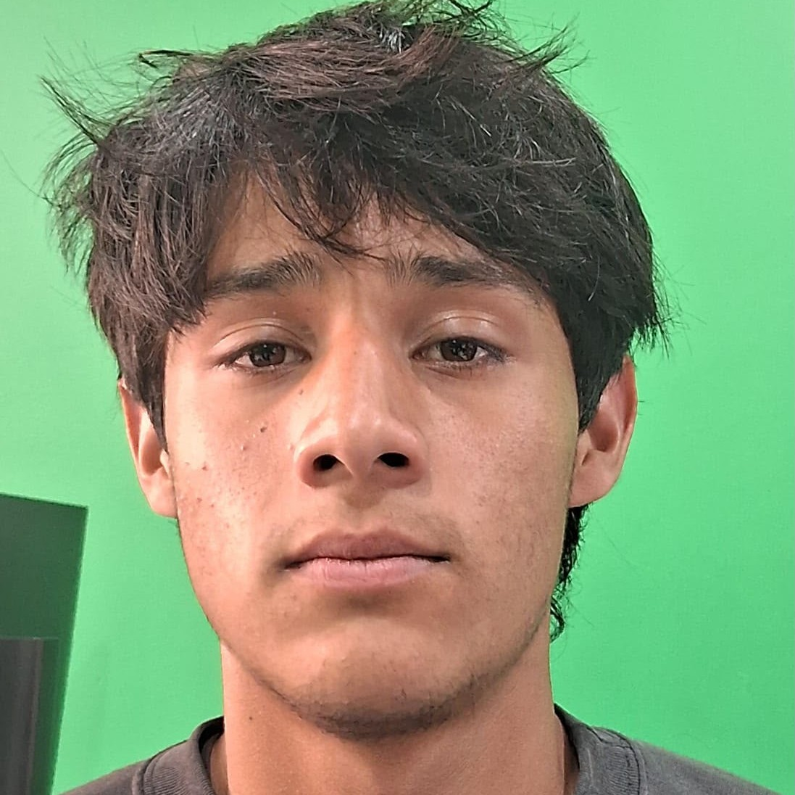
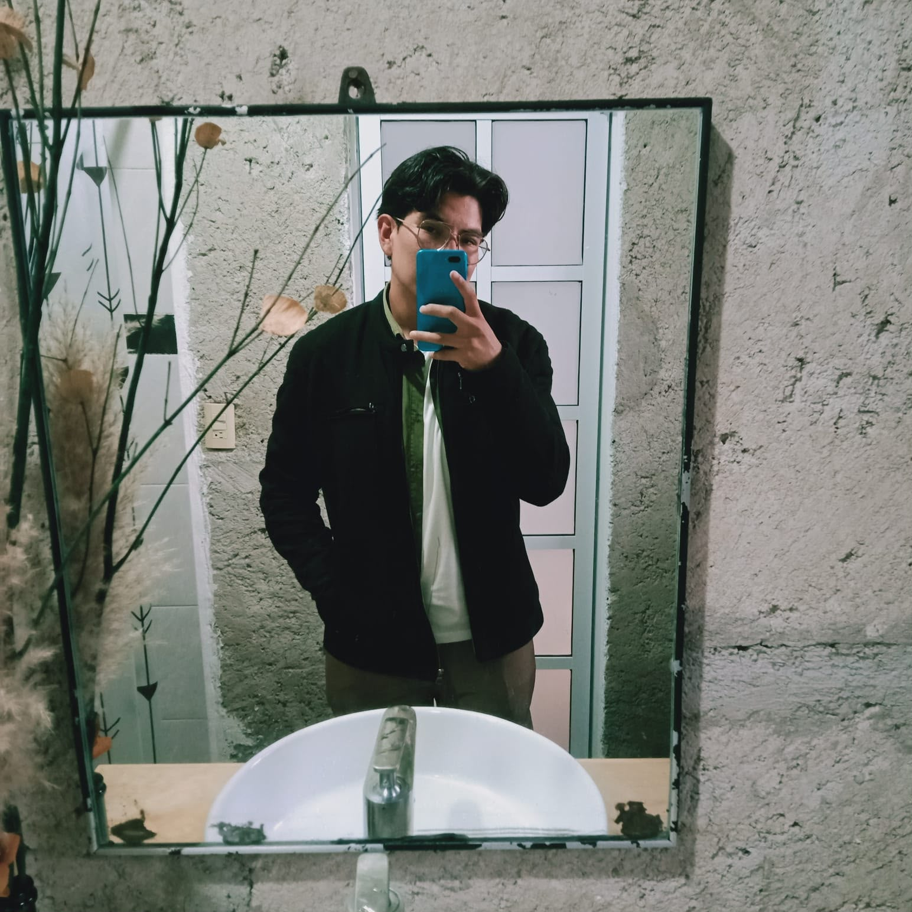
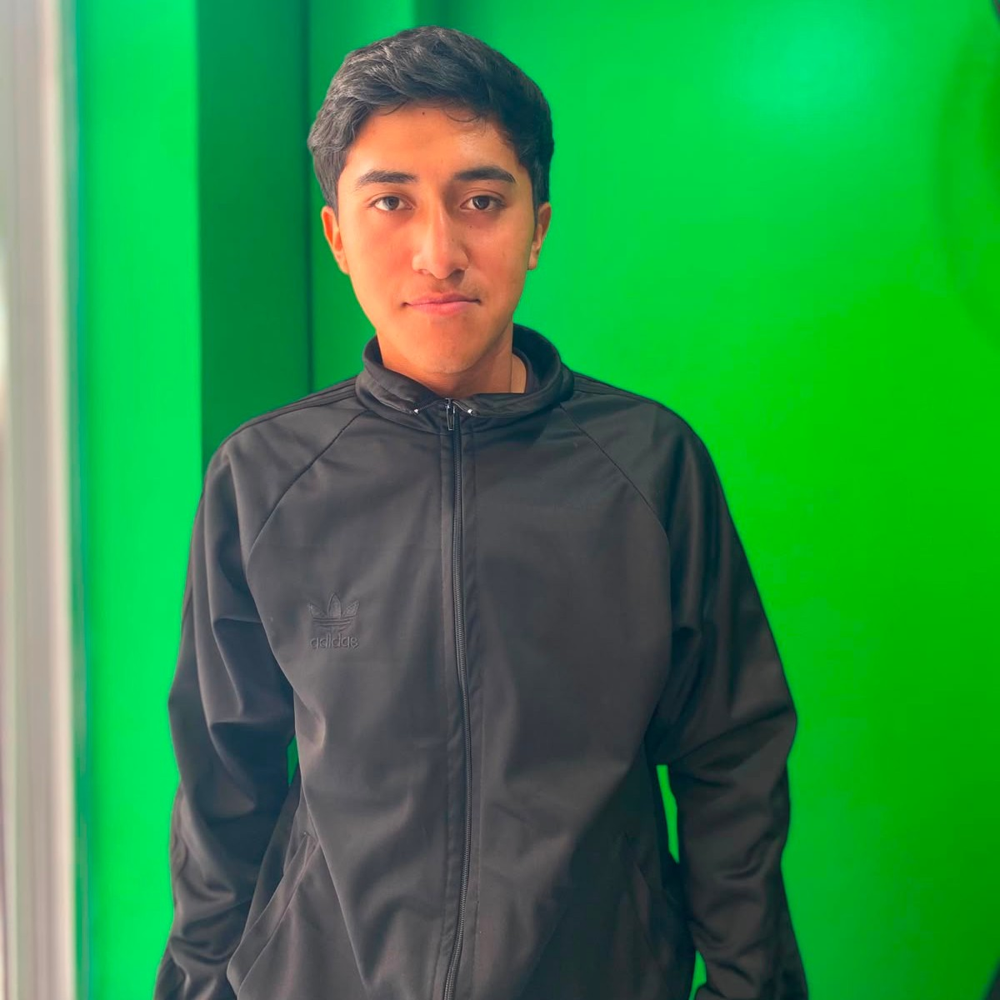
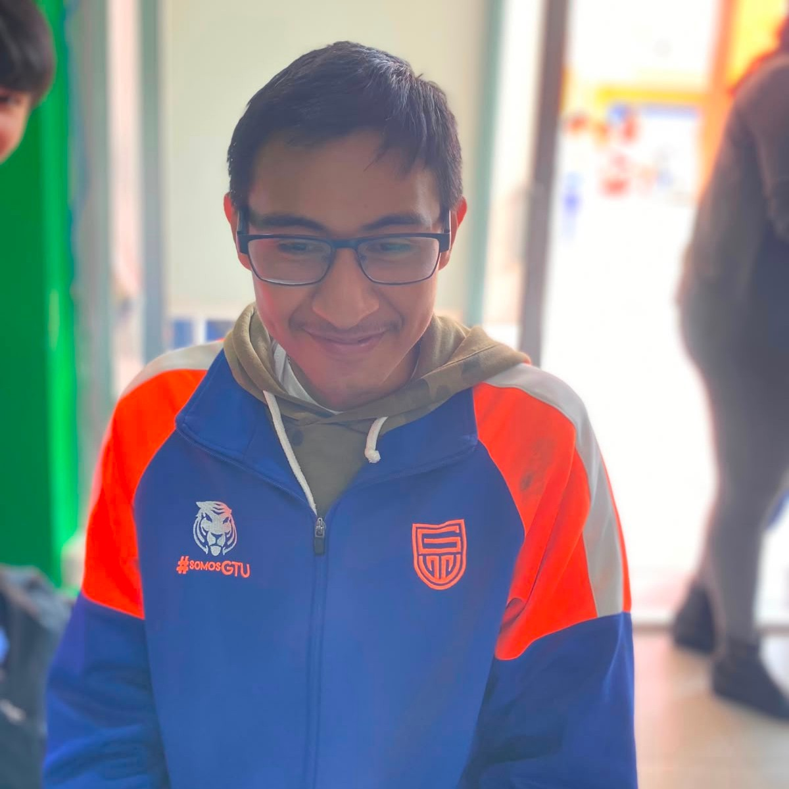
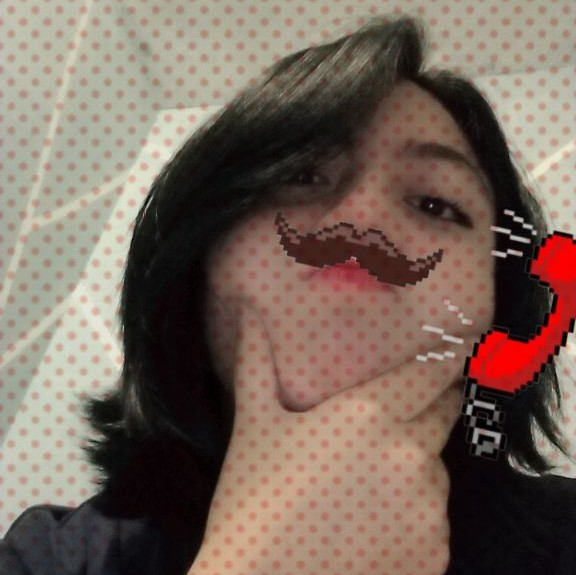
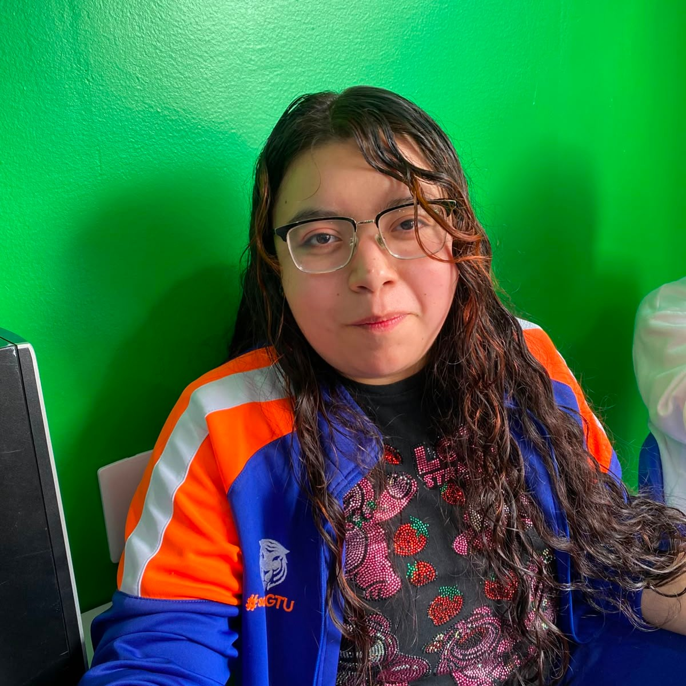
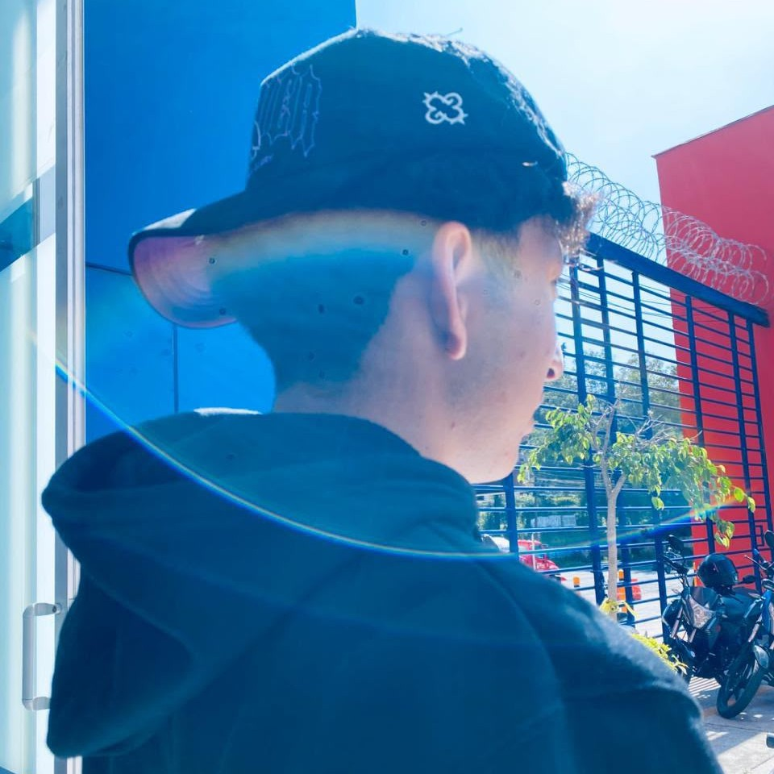
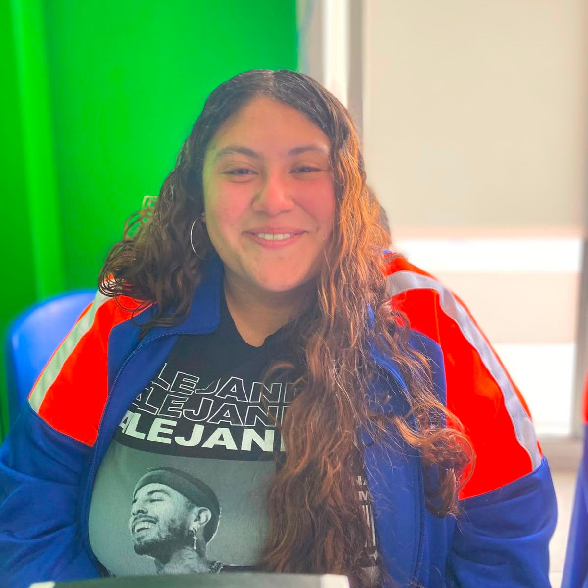
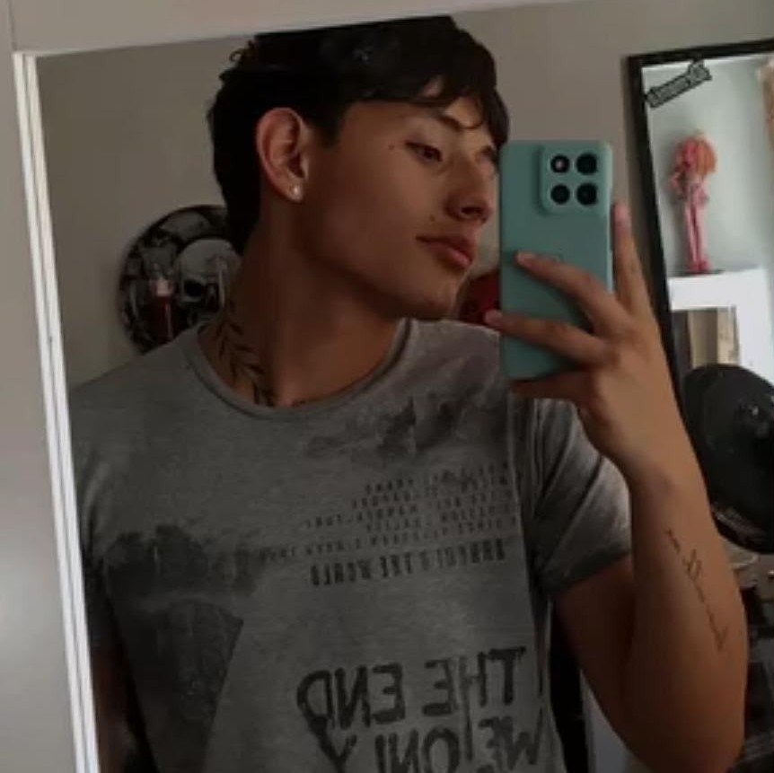
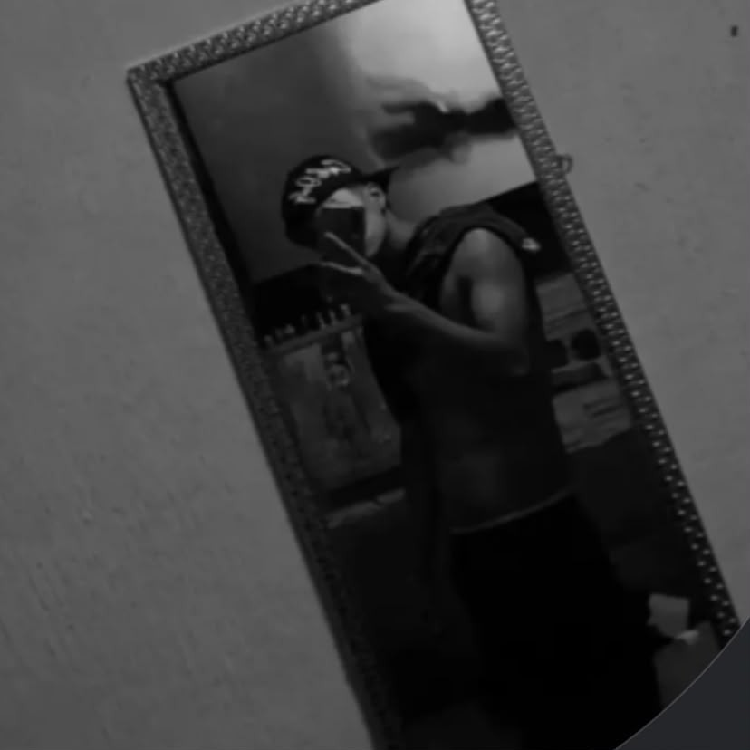
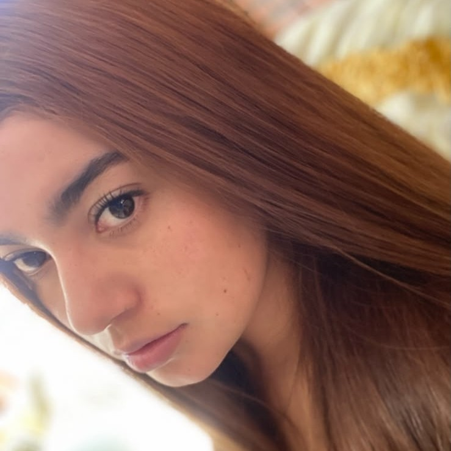
Éxito a cada uno en la nueva etapa que están por comenzar.